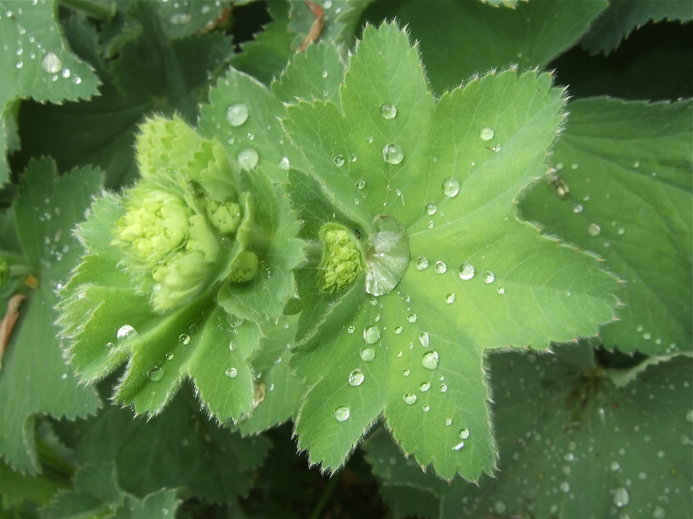

Tautropfen wie Quecksilber
Wer morgens früh am Frauenmantel vorbeigeht, erlebt ein kleines Wunder: Auf den runden, gefalteten Blättern stehen Wassertropfen wie kleine silberne Perlen — sie rollen, ohne zu zerlaufen. Botanisch: Die Blätter sind extrem wasserabweisend (Lotus-Effekt) und gleichzeitig produziert die Pflanze selbst Wasser durch Guttation (Wassertransport durch die Blattadern). Mittelalterliche Alchemisten dachten, dieses „reine“ Wasser sei magisch — daher der Name „Alchemilla“.
Marienkraut
Die Form der Blätter erinnert an einen mittelalterlichen Frauenmantel mit gewelltem Saum — daher der deutsche Name. Im Mittelalter war der Frauenmantel zudem mit der Madonna verbunden („Mantel Marias“) und galt als heiliges Frauenkraut. Volksmedizin gegen Frauenleiden bis heute, vor allem als Tee bei Menstruationsbeschwerden.